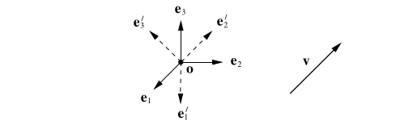

Unit 1: Tensor Algebra
Reading: [AFCiCM/08] Chapter 1
2025-02-20
Preliminaries
Units
What is the unit of force?
- The fundamental units required to define the unit of force are the following
- Length [L]
- Mass [M]
- Time [T]
- International System of Units, Newton, dyne, etc.
- Anglo-saxon System of Units, lb-f
(\(\S 1.1\)) Vectors (Session 1)
- A vector (or a first-order tensor, in general) is merely an abstraction/representation of a mechanical effect (a force, velocity, displacement, linear momentum, gradient of a scalar field variable, etc.).
- It is one of the main actors in the field of mechanics (apart from others such as scalars, or higher-order tensors).
Symbolic Representation of Vectors
- A vector/tensor is usually represented by placing a right arrow over the letter: \[ \vec{F},\; \vec{a},\,\, \vec{\nabla}\phi \]
- or a tilde symbol below as in: \[ \underset{\sim}{F},\; \underset{\sim}{a},\; \underset{\sim}{\nabla}\phi \]
- or simply using boldface if one has access to a modern typesetting system (such as latex) \[ \boldsymbol{F},\; \boldsymbol{a},\; \boldsymbol{\nabla}\phi \]
- the difference of the \(\nabla\) is that it is an operator which requires an argument, for example a scalar field variable such as the temperature \(T\) \[ \boldsymbol{\nabla}{T} \]
- represents the gradient of the temperature field.
Graphical Representation of Vectors

- Simplest algebraic operations such as addition or subtraction of two vectors, or the multiplication of a vector by a scalar can be performed graphically.
- By letting \(\mathcal{V}\) be the set of all vectors, then it should be TRUE that \[ \boldsymbol{u} + \boldsymbol{v} \in \mathcal{V} \;\; \forall \boldsymbol{u},\,\boldsymbol{v} \in \mathcal{V} \;\; \mathrm{and}\;\; \alpha\boldsymbol{v} \in \mathcal{V} \;\; \forall \alpha \in \mathbb{R},\; \boldsymbol{v} \in \mathcal{V}\,.\]
(\(\S 1.1.2\)) Scalar and Vector Products
- The scalar or dot product is defined as the product of the magnitudes of both arguments, and cosine of the acute angle \(\theta \in [0,\pi]\) subtended between the argument vectors placed tail to tail.
- The vector product is defined by a vector pointing normal to the plane formed by the argument vectors, in the sense shown by turning from the first argument towards the second using the right hand, having a magnitude equal to the products of the magnitudes of the argument vectors and the sine of the same angle, \(\theta \in [0,\pi]\).
- you can figure out the triple scalar product between three vectors. (Resulting in the volume of the parallelpiped formed by the three arguments.)
A code snippet in Octave/Matlab illustrating vector assignment, and the built-in dot product and cross product functions.
a = [0,1.5,3]';
b = [-2 2 1]';
c = dot(a,b);
d = cross(a,b);
(\(\S 1.1.3\)) Projections, Bases and Coordinate Frames
- Any vector \(\boldsymbol{v}\) can be decomposed into two vectors, one of which (\(\boldsymbol{v}_{e\parallel}\)) is parallel to a given direction (unit vector) \(\boldsymbol{e}\), and the other (\(\boldsymbol{v}_{e\perp}\)) perpendicular to \(\boldsymbol{e}\).
- A right handed orthonormal basis (\(\boldsymbol{i}, \boldsymbol{j}, \boldsymbol{k}\) or \(\boldsymbol{e}_1, \boldsymbol{e}_2, \boldsymbol{e}_3\)) is one relative to which vectors can be decomposed into components along the three coordinate axes (a Cartesian coordinate system).
- Respective vector components \(v_1,\,v_2,\,v_3\) are found by taking the dot product between the vector \(\boldsymbol{v}\) and each one of the unit vectors \(\boldsymbol{e}_i,\,i=1,2,3\).
- And the vector can be written as a sum of its projections onto the three coordinate axes (the classical notation).
- An alternate way of expressing the vector \(\boldsymbol{v}\) is the matrix notation. There the vector components are written as an ordered triplet listed in a column.

Let there be two bases \(\{\boldsymbol{e}_i\}\) and \(\{\boldsymbol{e}_{i'}\}\), the primed system rotated about the third axis in the positive sense by 45 degrees. A vector \(\boldsymbol{v}\) which has components \([1,1,0]\) in the first system will have what components in the primed system?
Questions for next session
Ask AI:
- Explain the indicial notation from physics
Deliverables
Students should be able to:
[ ]perform simple algebraic operations with vectors
(\(\S 1.2\)) Index Notation (Session 2)
- This is the way to code mechanics in a computational setting (such as Octave/matlab, or a finite element method tool).
- It simplifies the scalar (inner) product operation greatly.
- It provides a new tool for cyclic permutation.
(\(\S 1.2.1\))Summation Convention
- Instead of summing over the dimensions by rewriting each term for every other repeating dimension, a repeating (dummy) index implies summation (thus eliminating the need to write three terms explicitly), examples,
- \(\boldsymbol{a}\),
- \(\boldsymbol{a}\cdot\boldsymbol{b}\),
- \(\boldsymbol{a} = (\boldsymbol{c}\cdot\boldsymbol{b})\,\boldsymbol{b}\), etc.
- An index may not repeat more than twice,
- Non-repeating indices are called as free indices,
- A valid expression according to summation convention should have the same free indices appearing at each term.
- Work out some examples…
(\(\S 1.2.2\)) Kroenecker’s Delta and Permutation Symbols
- The Kroenecker delta symbol, \(\delta_{ij}\), is defined the dot (inner) product of base vectors.
- It is also known as an index shifter (\(\boldsymbol{e}_i = \delta_{ij}\boldsymbol{e}_j\)).
- The permutation (alternator) symbol, \(\epsilon_{ijk}\), is defined from the cyclic permutation that appears in the cross-product operation (\(\boldsymbol{e}_i\times \boldsymbol{e}_j = \epsilon_{ijk}\boldsymbol{e}_k\))
- The permutation symbol also proves useful in representing the determinant of a second-order tensor.
Exercises: (\(\S 1.2.4\)) Vector Operations in Components
- the scalar (inner) product
- the vector (cross) product
- the triple scalar product
- the triple vector product
Questions for next session
Ask AI:
- what is a second-order tensor?
Deliverables
Students should be able to:
[ ]read and verify expressions written in the indicial notation[ ]convert expressions between their tensor and indicial forms
Code Appendix
Python definition of the levi-civita operator
import numpy as np
from itertools import permutations
def levi_civita(n):
"""
Generate the Levi-Civita permutation symbol (n-dimensional).
Parameters:
n (int): The dimension of the Levi-Civita symbol (e.g., 2 for ε_ij, 3 for ε_ijk)
Returns:
np.ndarray: A tensor of shape (n, n, ..., n) with the Levi-Civita symbol values.
"""
# Create an n-dimensional tensor filled with zeros
epsilon = np.zeros((n,) * n, dtype=int)
# Get all permutations of indices [0, 1, ..., n-1]
for perm in permutations(range(n)):
# Compute the sign of the permutation
sign = np.linalg.det(np.eye(n)[:, perm])
epsilon[perm] = int(sign)
return epsilon
# import functions from this file into any python script using:
# from tensor_utils import levi_civita
# Example: Generate the 3D Levi-Civita symbol (ε_ijk)
# levi_3d = levi_civita(3)
# print(levi_3d)
Some example calculation in index notation
import numpy as np
A = np.random.rand(3, 3) # Generates random values between 0 and 1
u = np.random.rand(3)
v = np.random.rand(3)
from tensor_utils import levi_civita # in tensor_utils.py
levi_3d = levi_civita(3)
# the cross product between two vectors
cross_product = np.einsum('ijk,j,k->i', levi_3d, u, v)
print("Cross Product (u × v):", cross_product)
cross_product - np.cross(u,v) # verify equality with built-in functions
# A vector into a second-order tensor (inner product, contraction)
w = np.einsum('ij,j->i', A, u) # Contract over index 'j'
w - np.dot(A,u) # verify equality with built-in functions
(\(\S 1.3\)) Second-Order Tensors (Session 3)
Review of previous session (by scripting in Python)
Accessing python using https://www.pythonanywhere.com
Illustration of vector assignment, and the dot product, the cross product, and other operations in Python.
import numpy as np
vec_1 = np.array( [ 1 , 1 , 2] )
vec_2 = np.array( [-1 , 0 , 2] )
vec_3 = np.array( [ 1 ,-2 , 0] )
# the dot product, vec_1 . vec_3
np.dot( vec_1 , vec,3 )
# the cross product, vec_3 x vec_2
np.cross( vec3 , vec2 )
# the scalar triple product, (vec_2 x vec_1) . (vec_3)
np.dot( np.cross( vec2 , vec1 ) , vec_3 )
# the triple vector product, vec_2 . (vec_1 x vec_3)
np.cross( vec_2 , np.cross( vec_1 , vec_3 ) )
Questions for AI? Hint: https://www.pythonanywhere.com site to access python online.
- can we write math expressions in indicial notation in python?
- can you provide a function definition for the permutation symbol in this context? ../scripts/levi_civita.py
- please provide some examples from vector algebra in indicial notation.
(\(\S 1.3.1\)) Definition
- Scalars have no index, first-order tensors (vectors) have one. The index is associated with a basis.
- Abstraction of a physical field or operator that has two indices or bases, is called as a second-order tensor.
- A transformer between vectors, \(\boldsymbol{S}\boldsymbol{u} = \boldsymbol{v}\), or \(\boldsymbol{S}(\boldsymbol{u}) = \boldsymbol{v}\)
- On the vector space \(\mathcal{V}\), we have a linear mapping \(\boldsymbol{T}:\mathcal{V}\rightarrow\mathcal{V}\) such that
- addition \[\boldsymbol{T} (\boldsymbol{u} + \boldsymbol{v}) = \boldsymbol{T}\boldsymbol{u} + \boldsymbol{T} \boldsymbol{v} \; \forall \; \boldsymbol{u},\,\boldsymbol{v} \in \mathcal{V},\]
- scalar multiplication \[\boldsymbol{T}(\alpha \boldsymbol{u}) = \alpha \boldsymbol{T}\,\boldsymbol{u} \; \forall \; \alpha \in \mathbb{R} \; \mathrm{and} \; \boldsymbol{u} \in \mathcal{V}.\]
- The zero tensor annuls anything it multiplies with
- Some examples to second-order tensors are the Kroenecker’s delta, \(\delta_{ij}\), the change of basis tensor, \(Q_{i'j}\), etc.
- The identity tensor \(\boldsymbol{I}\), reproduces its argument as its result: \(\boldsymbol{I} \boldsymbol{v} = \boldsymbol{v}\).
- \(\delta_{ij}\) is the identitiy tensor in indicial notation
- The equality of two second-order tensors may be established by the identity \(\boldsymbol{S}\boldsymbol{v}=\boldsymbol{T}\boldsymbol{v}\) for all \(\boldsymbol{v} \in \mathcal{C}\).
Example 1: Projections:
Example 2: Rotations:
Example 3: Reflections:

(\(\S 1.3.2\)) Second-Order Tensor Algebra
Let \(\mathcal{V}^2\) be the set of second-order tensors, then
- The summation of two elements of \(\mathcal{V}^2\) is also a member of \(\mathcal{V}^2\),
- The multiplication of a member of \(\mathcal{V}^2\) by a scalar, is also a member of \(\mathcal{V}^2\),
- By multiplying two elements from \(\mathcal{V}^2\), taking the inner product (the summation between columns of the left tensor with the rows of the right tensor) between adjacent indices is implied.
- It is implied that \[(\boldsymbol{S}\boldsymbol{T})\boldsymbol{u} = \boldsymbol{S}(\boldsymbol{T}\boldsymbol{u})\]
(\(\S 1.3.3\)) Indicial Representation
- The components of a second-order tensor \(\boldsymbol{S}\) in a coordinate frame \(\{\boldsymbol{e}_i\}\) are nine numbers \(S_{ij}\;(1\leq i,j \leq 3)\) defined by \[S_{ij} = \boldsymbol{e}_i \cdot \boldsymbol{S}\boldsymbol{e}_j.\]
- Given vectors \(\boldsymbol{u} = u_i \boldsymbol{e}_i\) and \(\boldsymbol{v} = v_j \boldsymbol{e}_j\) such that \(\boldsymbol{v} = \boldsymbol{S} \boldsymbol{u}\), we can write \[v_i = S_{ij} u_j\]
- The nine components arranged into a square matrix is called the matrix representation, and is denoted as \([\boldsymbol{S}]\in\mathbb{R}^{3\times 3}\).
- The transpose operation is simply obtained by interchanging the rows and columns of the matrix \([\boldsymbol{S}]\), and is denoted as \([\boldsymbol{S}]^T\).
- The tensor equation \(\boldsymbol{v} = \boldsymbol{S} \boldsymbol{u}\) can be written in various forms as \[\boldsymbol{v} = \boldsymbol{S} \boldsymbol{u} \; \Leftrightarrow \; v_i=S_{ij}u_j \; \Leftrightarrow \; [\boldsymbol{v}] = [\boldsymbol{S}] [\boldsymbol{u}] \]
Questions for next session
Ask AI:
- How can a second-order tensor be symmetric or invertible? What is the relationship between invertibility and determinant of a second-order tensor?
Deliverables
Students should be able to:
[ ]transform vectors linearly via second-order tensors[ ]convert expressions between their tensor and matrix forms
(\(\S 1.3\)) Special Classes and Operations (Session 4)
(\(\S 1.3.6\)) Symmetry, Inverse, Orthogonality, etc.
- To any tensor \(\boldsymbol{S}\in \mathcal{V}^2\) we associate a transpose \(\boldsymbol{S}^T \in \mathcal{V}^2\), which shows \[\boldsymbol{S}\boldsymbol{u} \cdot\boldsymbol{v} = \boldsymbol{u} \cdot \boldsymbol{S}^T\boldsymbol{v} \;\;\; \forall \boldsymbol{u},\boldsymbol{v} \in \mathcal{V}.\]
- We say, a tensor is symmetric if \(\boldsymbol{S}^T = \boldsymbol{S}\), and,
- skew-symmetric if \(\boldsymbol{S}^T = -\boldsymbol{S}\).
- A tensor \(\boldsymbol{T}\in \mathcal{V}^2\) is said to be positive-definite if it satisfies \[ \boldsymbol{v} \cdot \boldsymbol{T}\boldsymbol{v} > 0\; \forall \boldsymbol{v}\neq 0,\]
- and is said to be invertible if there exists an inverse \(\boldsymbol{P}^{-1}\in \mathcal{V}^2\) such that \[\boldsymbol{P}\boldsymbol{P}^{-1} = \boldsymbol{P}^{-1} \boldsymbol{P} = \boldsymbol{I}.\]
- The inverse and transpose operations may commute, that is \((\boldsymbol{P}^{-1})^T = (\boldsymbol{P}^T)^{-1}\), and this is usually denoted as \(\boldsymbol{S}^{-T}\).
- A tensor \(\boldsymbol{Q}\in \mathcal{V}^2\) is said to be orthogonal if \(\boldsymbol{Q}^T= \boldsymbol{Q}^{-1}\), that is \[\boldsymbol{Q}\boldsymbol{Q}^{T} = \boldsymbol{Q}^{T} \boldsymbol{Q} = \boldsymbol{I}.\] Such a tensor produces a right-handed rotation rotation, provided it has a positive determinant.
(\(\S 1.3.7\)) Change of Basis
- Let \(\{\boldsymbol{e}_i\}\) and \(\{\boldsymbol{e}_{i'}\}\) be two right-handed bases vector sets in \(\mathbb{E}^3\), where expression of the primed set in terms of the unprimed can be written as \[\boldsymbol{e}_{j'} = (\boldsymbol{e}_1 \cdot \boldsymbol{e}_{j'}) \boldsymbol{e}_1 + (\boldsymbol{e}_2 \cdot \boldsymbol{e}_{j'}) \boldsymbol{e}_2 + (\boldsymbol{e}_3 \cdot \boldsymbol{e}_{j'}) \boldsymbol{e}_3 = (\boldsymbol{e}_i \cdot \boldsymbol{e}_{j'}) \boldsymbol{e}_i,\]
- while the unprimed set can similarly be expressed in terms of the primed, as \[\boldsymbol{e}_j = (\boldsymbol{e}_j \cdot \boldsymbol{e}_{1'}) \boldsymbol{e}_{1'} + (\boldsymbol{e}_j \cdot \boldsymbol{e}_{2'}) \boldsymbol{e}_{2'} + (\boldsymbol{e}_j \cdot \boldsymbol{e}_{3'}) \boldsymbol{e}_{3'} = (\boldsymbol{e}_j \cdot \boldsymbol{e}_{i'}) \boldsymbol{e}_{i'}.\]
- Defining the term in parantesis as the change of basis tensor (a.k.a. rotation), \(Q_{i'j} = (\boldsymbol{e}_{i'} \cdot \boldsymbol{e}_j)\), the above expressions can be written as \(\boldsymbol{e}_j = Q_{i'j} \boldsymbol{e}_{i'}\), and, \(\boldsymbol{e}_{j'} = Q_{j'k} \boldsymbol{e}_k\).
- If the former expansion is used in the latter, or the latter is used in the former, we find out that the tensor \(\boldsymbol{Q}\) is orthogonal.
Transformation of Components Under a Change of Basis

- Consider an arbitrary vector \(\boldsymbol{v}\in\mathcal{V}\) as illustrated above. Let \([\boldsymbol{v}] = (v_1,v_2,v_3)^T\) be its representation in \(\{\boldsymbol{e}_i\}\), \([\boldsymbol{v}]' = (v_{1'},v_{2'},v_{3'})^T\) be its representation in \(\{\boldsymbol{e}_{i'}\}\), and \(\boldsymbol{Q}\) be the change of basis tensor from \(\{\boldsymbol{e}_i\}\) to \(\{\boldsymbol{e}_{i'}\}\).
- By definition of the components we have \(\boldsymbol{v} = v_i \boldsymbol{e}_i = v_{j'} \boldsymbol{e}_{j'}\) which implies \(v_{i'} = Q_{i'j}v_j\) upon substitution.
- For second-order tensors, both indices should be processed by \(Q_{i'j}\) (once from the left and right).
Questions for next session
Ask AI:
- What sort of information is carried by the eigenvalues of a second-order tensor?
Deliverables
Students should be able to:
[ ]perform change of basis of vector components
(\(\S 1.3\)) Invariants and Eigenvalues (Session 5)
(\(\S 1.3.8\)) The Trace and the Determinant
- The trace of a second-order tensor is a linear mapping tr : \(\mathcal{V}^2\, \rightarrow \mathbb{R}\) defined by \[\mathrm{tr}\,\boldsymbol{S} = S_{ii}\]
- It has a similar representation in the matrix form \[\mathrm{tr}\,[\boldsymbol{S}] = [\boldsymbol{S}]_{ii}\]
- Show that the trace remains invariant to a change of basis, i.e. \[\mathrm{tr}\, [\boldsymbol{S}] = \mathrm{tr}\, [\boldsymbol{S}]'\]
- The determinant of a second-order tensor is a mapping det : \(\mathcal{V}^2\, \rightarrow \mathbb{R}\) defined by \[ \mathrm{det} \boldsymbol{S} = \epsilon_{ijk} S_{i1} S_{j2} S_{k3}\]
- In matrix form this corresponds to \[ \mathrm{det} [\boldsymbol{S}] = \mathrm{det} ([\boldsymbol{S}\boldsymbol{e}_1],\,[\boldsymbol{S}\boldsymbol{e}_2],\,[\boldsymbol{S}\boldsymbol{e}_3]) \]
- The determinant is also invariant to a change of basis (it’s value does not change as a result of changing to a different basis )
(\(\S 1.3.9\)) Eigenvalues, Eigenvectors and Principal Invariants
It occurs that for some particular directions a second-order tensor \(\boldsymbol{S}\) produces a vector that is in the same direction as it’s argument vector \(\boldsymbol{e}\), as in \[\boldsymbol{S} \boldsymbol{e} = \lambda \boldsymbol{e}.\]
- Any such \(\lambda\) is called an eigenvalue and any such \(\boldsymbol{e}\) an eigenvector of \(\boldsymbol{S}\).
- From linear algebra we recall that \(\lambda\) is an eigenvalue if and only if it is a root of the characteristic (cubic) polynomial \[p(\lambda) = \mathrm{det} (\boldsymbol{S} - \lambda \boldsymbol{I}).\]
- Moreover, to any eigenvalue \(\lambda\), one or more eigenvectors \(\boldsymbol{e}\) may be associated by solving the linear, homogeneous equation \[(\boldsymbol{S} - \lambda \boldsymbol{I}) \boldsymbol{e} = \boldsymbol{0}.\]
- The principal invariants of a second-order tensor \(\boldsymbol{S}\) are three scalars defined by \[I_1(\boldsymbol{S}) = \mathrm{tr} \mathrm{\boldsymbol{S}} ,\hspace{1em} I_1(\boldsymbol{S}) = \frac{1}{2} [(\mathrm{tr} \boldsymbol{S})^2 - \mathrm{tr} (\boldsymbol{S}^2)] ,\hspace{1em} I_3(\boldsymbol{S}) = \mathrm{det} \boldsymbol{S}.\]
- For any \(\alpha \in \mathbb{R}\), the principal invariants satisfy the relation \[ \mathrm{det} (\boldsymbol{S} - \alpha \boldsymbol{I}) = -\alpha^3 + I_1(\boldsymbol{S}) \alpha^2 - I_2(\boldsymbol{S}) \alpha + I_1(\boldsymbol{S}).\]
- The invariants are not affected by a change of basis.
- When \(\boldsymbol{S}\) is symmetric it can be shown that all three roots of the characteristic polynomial are real.
Questions for next session
Ask AI:
- What is the physical interpretation of the gradient of a scalar or vector field variable?
Deliverables
Students should be able to:
[ ]calculate the determinant of a second-order tensor[ ]calculate the eigenvalues and eigenvectors of a second-order tensor
END OF UNIT 1